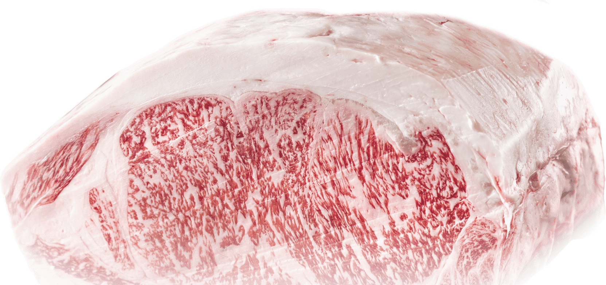
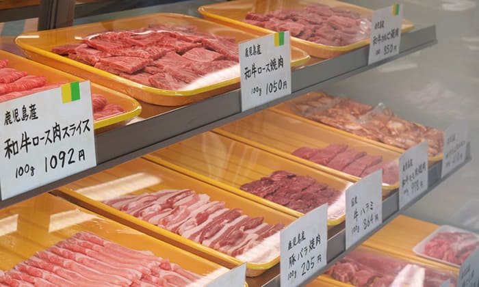
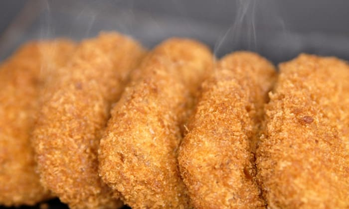
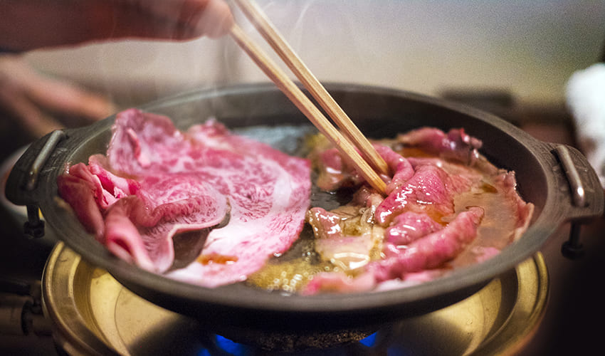
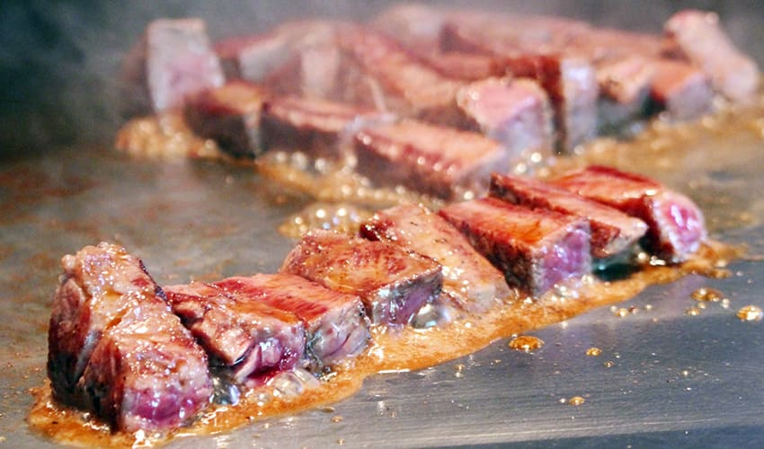
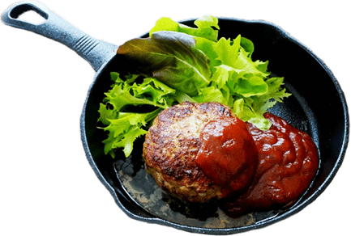

「竹原精肉店」は福井県に開業して以来、
多くのお客様にご支持いただき、
精肉店として、
多くのお客様にご愛好いた抱いております。
"鹿児島黒牛 販売指定店"
だからこそご提供できる、
厳選した極上肉をお召し上がりいただけます。

南国の温暖な気候と、澄んだ空気、滑らかな水、緑豊かな大自然と
恵まれた中で大切に育てられた鹿児島黒牛。
サシの美しさ、キメの細かさ、
とろけるような柔らかさと、深い味わいの特選和牛。
肉を熟知した「竹原ブランド」だからこそご提供できる、
厳選した極上肉をお召し上がりいただけます。

当店では、プロの目利きによる厳選した肉を取り扱い、
確かな品質と安全なお肉をご提供させていただいております。
竹原こだわりのお肉を、普段使いからギフトまで、
幅広いシーンでご利用ください。
ショーケースには、鍛え抜かれた目利きと経験により
厳選された極上肉を取り揃えております。

厳選仕入れの極上肉を使用したお惣菜をご提供、
お肉屋さんならではの、出来立てお惣菜が人気です。
ちょっとしたおやつに、夕食の一品に！主婦の心強い味方です。
和牛をふんだんに使って、肉汁と旨味をしっかり詰め込むように
丹生込めて仕上げた外はサクサク、中はホクホクのコロッケを
ぜひ一度ご賞味ください。


黒毛和牛は、国産牛や輸入牛より脂肪の融点が非常に低く、口にするとすぐに溶け出します。
非常に舌触りがよく、まろやかで肉の旨味が強調されるので、すき焼きと相性が良いです。

口に入れた瞬間、上質な黒毛和牛でのみ味わうことができる
独特の甘みと濃厚な旨味が口にふわっと広がります。
肉質はきめ細やかで、霜降りの入り方も適度でやわらかく、コク深い風味を味わえます。

お客様の声

店舗情報
有限会社 竹原精肉店
〒910-1133 福井県吉田郡永平寺町松岡春日2丁目79
TEL 0776-61-0512
営業時間 10:00~19:00
定休日 日曜日